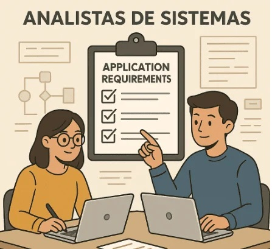
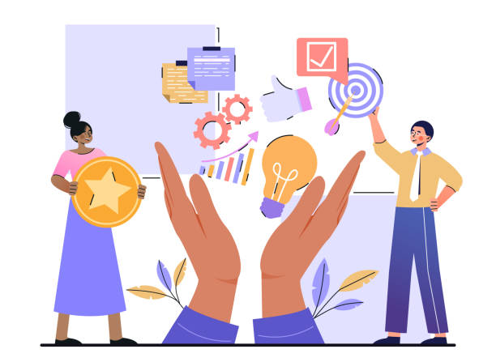
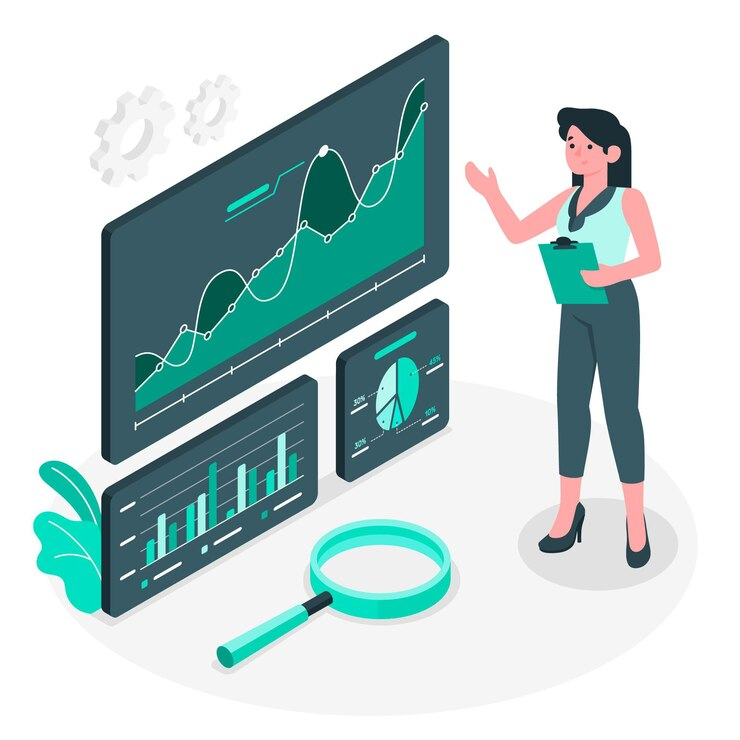

Análisis y Diseño de Sistemas I.
Undécimo Grado (II BTP) Sección "A"
Docente: Pablo Antonio Peña.
Fecha: 13 de Julio de 2025.
El analista de sistemas es el puente esencial entre las necesidades del negocio y la implementación tecnológica.

Un analista exitoso combina habilidades técnicas y habilidades blandas.

El analista de sistemas enfrenta diversos obstáculos en su día a día.

Tarea: Análisis Comparativo de Perfiles Profesionales y Caso Práctico.
Realizar un análisis comparativo de dos perfiles profesionales de "Analista de Sistemas" encontrados en ofertas de empleo reales o descripciones de puestos. Identificar similitudes y diferencias en sus responsabilidades y habilidades requeridas. Adicionalmente, resolver un caso práctico corto (proporcionado por el docente o investigado) donde se planteen desafíos típicos del rol del analista, proponiendo soluciones. Presentar en formato digital (documento o presentación).
Fecha de Entrega: 20 de Julio de 2025.
Ponderación: TC 5%.
El rol del analista de sistemas es esencial para el éxito de los proyectos de software.
Su combinación de habilidades técnicas y blandas es clave para traducir necesidades de negocio en soluciones tecnológicas.
¡Gracias por su atención y participación!